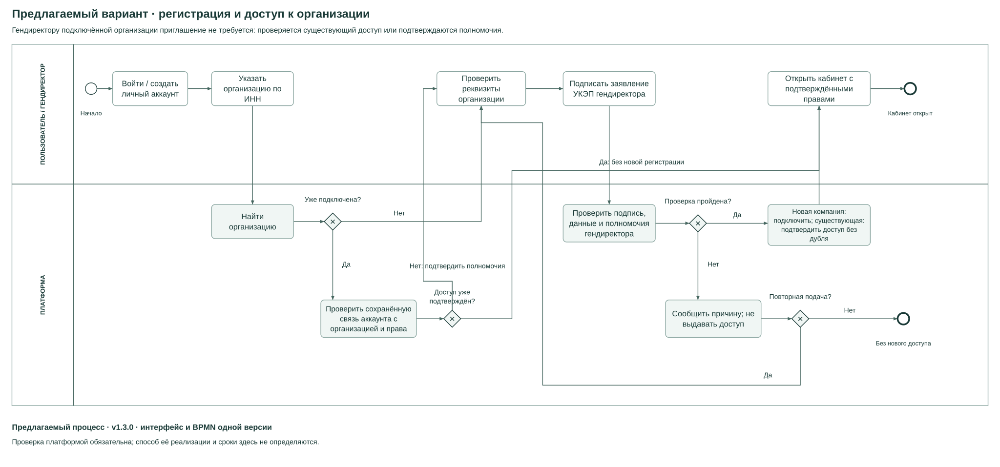
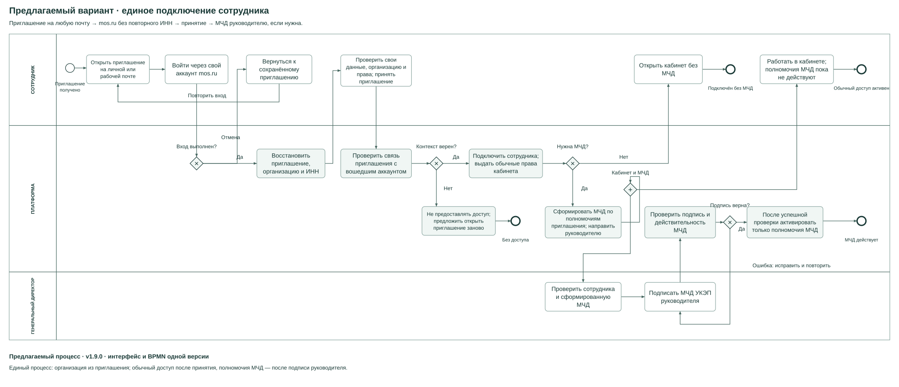
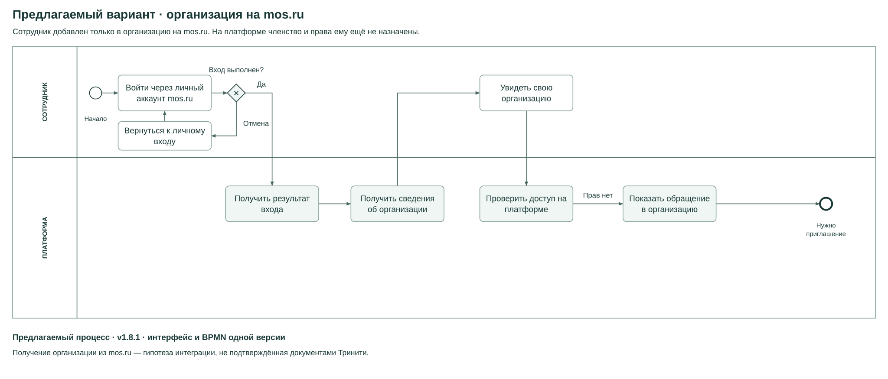
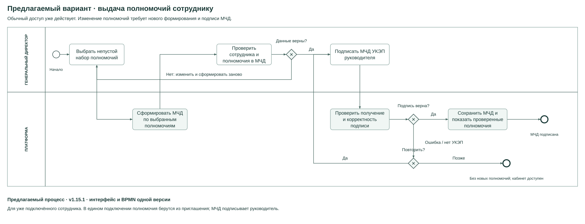

Предлагаемый вариант: процессы регистрации
Организацию регистрирует генеральный директор. Сотрудник по приглашению входит с существующим паролем или задаёт новый. Схемы соответствуют правкам от 03.11.2026.
Регистрация организации
Откройте SVG для увеличения или скачайте BPMN для редактирования.

Сотрудник по приглашению
Откройте SVG для увеличения или скачайте BPMN для редактирования.

Организация сотрудника есть на mos.ru
Откройте SVG для увеличения или скачайте BPMN для редактирования.

Выдача полномочий и МЧД
Откройте SVG для увеличения или скачайте BPMN для редактирования.

Скачать описание процессов и границ
В кейсе mos.ru получение сведений организации показано как гипотеза интеграции. У Тринити такое автоматическое получение не подтверждено: инструкция описывает ввод ИНН и оформление МЧД.
Официальная инструкция Тринити
Механизм и сроки проверки платформой требуют дальнейшего определения. Схемы описывают предлагаемый вариант.